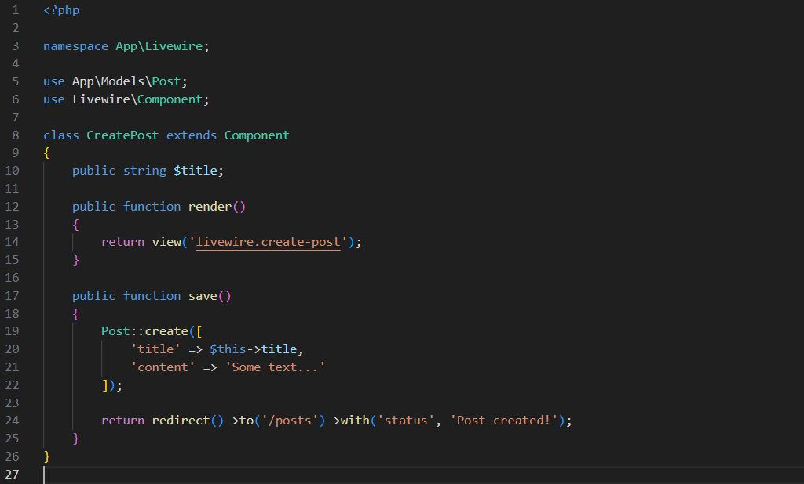
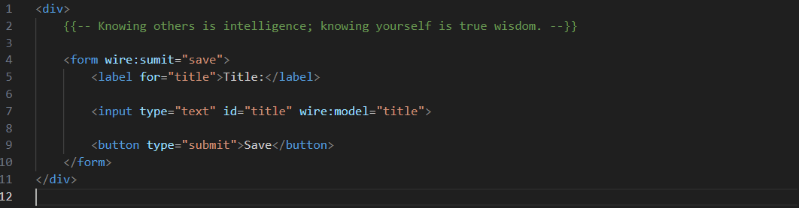

Las acciones son métodos dentro de tu componente Livewire que manejan las interacciones del usuario o realizan tareas específicas. Suelen ser útiles para responder a clics en botones o envíos de formularios en una página.
Para aprender más sobre las acciones, agreguemos la acción save al componente CreatePost:
A continuación, llamemos a la acción save desde la vista Blade del componente agregando la directiva wire:submit al elemento form:
Cuando se haga click en el boton "Save", el metodo save() en tu componente livewire será ejecutado y tu componente se re-renderizará.